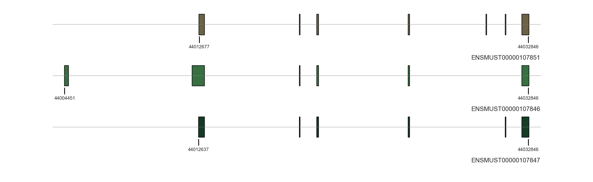
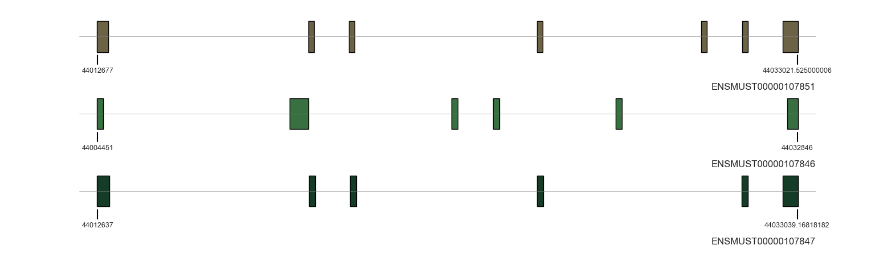

from allos.transcript_data import TranscriptDataTranscript plots
The TranscriptPlots class is defined to facilitate the visualization of transcript structures.
import os
import urllib.request
from pathlib import Path# Example Ensembl URLs for mouse GRCm39 (release 109)
gtf_url = "ftp://ftp.ensembl.org/pub/release-109/gtf/mus_musculus/Mus_musculus.GRCm39.109.gtf.gz"
#fasta_url = "ftp://ftp.ensembl.org/pub/release-109/fasta/mus_musculus/dna/Mus_musculus.GRCm39.dna.primary_assembly.fa.gz"
data_dir = Path("data")
data_dir.mkdir(exist_ok=True)
gtf_file_local = data_dir / "Mus_musculus.GRCm39.109.gtf.gz"
fasta_file_local = data_dir / "Mus_musculus.GRCm39.dna.primary_assembly.fa.gz"
# Download if not already present
if not gtf_file_local.is_file():
print(f"Downloading {gtf_url}...")
urllib.request.urlretrieve(gtf_url, gtf_file_local)
#if not fasta_file_local.is_file():
#print(f"Downloading {fasta_url}...")
#urllib.request.urlretrieve(fasta_url, fasta_file_local)
# Instantiate your TranscriptData
td = TranscriptData(
gtf_file=gtf_file_local,
reference_fasta=fasta_file_local
)
# Now you can make queries like:
example_transcript_id = "ENSMUST00000070533" # e.g., for mouse
exons = td.get_exons(example_transcript_id)
print("Exons:", exons)Exons: +--------------+----------------+------------+-----------+-------+
| Chromosome | Source | Feature | Start | +22 |
| (category) | (object) | (object) | (int64) | ... |
|--------------+----------------+------------+-----------+-------|
| 1 | ensembl_havana | exon | 3740774 | ... |
| 1 | ensembl_havana | exon | 3491924 | ... |
| 1 | ensembl_havana | exon | 3284704 | ... |
+--------------+----------------+------------+-----------+-------+
Stranded PyRanges object has 3 rows and 26 columns from 1 chromosomes.
For printing, the PyRanges was sorted on Chromosome and Strand.
22 hidden columns: End, Score, Strand, Frame, gene_id, gene_version, ... (+ 16 more.)TranscriptPlots
TranscriptPlots (gtf_file=None, reference_fasta=None)
Initialize self. See help(type(self)) for accurate signature.
To initialise class:
tp = TranscriptPlots(gtf_file_local)To plot a panel for one or several transcripts:
tp.draw_transcripts_list(["ENSMUST00000107851", "ENSMUST00000107846", "ENSMUST00000107847"], colors=ghibli)
To retrieve information about a transcript of interest:
tp.get_transcript_info("ENSMUST00000107847"){'transcript_id': 'ENSMUST00000107847',
'transcript_name': 'Clta-203',
'transcript_type': 'unknown',
'cds_start': 44012791,
'cds_end': 44032400,
'chromosome': '4',
'strand': '+'}“draw_transcript_list_unscaled” keeps the structure of transcripts but shortens the introns. It is useful to compare the structure of transcipts with extremely long introns:
tp.draw_transcripts_list_unscaled(["ENSMUST00000107851", "ENSMUST00000107846", "ENSMUST00000107847"], colors=ghibli)
If neither gtf nor fasta is provided, the transcripts can be provided as ensembl id and the coordinates will be fetched from ensembl api.